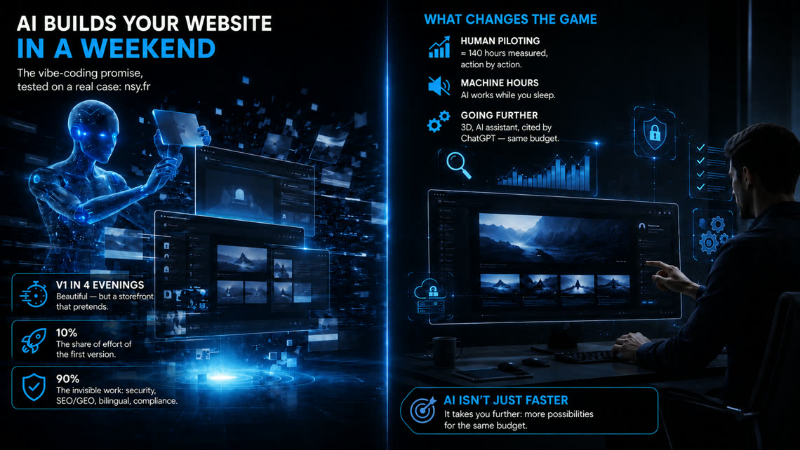

Building your website with AI in a weekend:
we took the promise at its word
“Your website in a weekend, thanks to AI.” The promise is everywhere — vibe-coding tools, website generators, spectacular demos. Rather than commenting on it, we took it at its word, on the one test subject whose history we know minute by minute: nsy.fr itself. Every build action is timestamped there — saved versions, AI working sessions — so the figures in this article are measured, not remembered. And one conviction as a common thread: AI isn’t just about going faster — it’s about going further.

Verdict first: the promise is true
The first version of nsy.fr took four evenings — about ten hours, the honest equivalent of a well-filled weekend. It looked great: an animated homepage (a neural network in the background, a hero video), polished dark design, offer, about and contact sections. Shown to a friend, it made an impression. Three years ago, that result would have taken one person weeks.
That is the part of the story the demos tell. It is accurate. Here is the rest.
What that V1 really was
The inventory of that V1 fits on one line: one page, 22 files, French only. And above all, a list of what it did not have — invisible on a screenshot: a contact form that sent nothing, no existence for search engines or AI assistants, no defence against spam bots, no English version, no legal notice, no privacy policy.
A V1 generated in a weekend is a storefront in the desert: pretty, but with no street in front, no lock on the door, and nobody who knows it exists.
The steps that followed, stopwatch in hand
Between that V1 and the site you are reading: 328 saved versions, and nearly 140 hours of active piloting — measured action by action in the logbook, pauses and nights excluded. On top of that comes time of a completely different nature: the hours when the AI executed alone — more than one task launched in the evening was finished by morning. That machine time has its own cost, the cost of AI infrastructure, but it is not paid in evenings. This is the real accounting of an AI-driven build: hours of human piloting, multiplied by machine hours that don’t consume your time.
≈ 8 h — a form that actually sends
Almost as long as the entire V1, for a single button. Wiring a real mail server, validating fields properly in both languages, handling waiting and error states, sending the visitor an acknowledgement. That is the first lesson of the build: behind every “obvious” element of a website, there is a V1 that pretends and a version that works.
≈ 4 h — the site speaks English, and 3D arrives
Going bilingual FR/EN (with the visitor’s choice remembered) and the arrival of the site’s visual signature: an interactive 3D wireframe model. First generated at 12 MB — unusable on mobile — it was reworked down to 660 KB, less than a photo. Only four hours of piloting, because the AI did the heavy lifting between two instructions. AI produces fast; making things light is another craft.
≈ 55 h — a 3D studio inside the build
The single biggest block of time in the project is not web work: it is 3D creation in Blender. Beyond the interactive model, a complete animation was produced — vehicles modelled and animated down to the suspension travel, lighting, multiple cameras, physically realistic frame-by-frame rendering, final video editing. The AI drove Blender the way it drives code: scene scripts, render diagnostics, back-and-forth on details (one stray glowing edge on the road took a whole evening). The result now powers our 3D Design offering — and illustrates the real message of this stage: with AI, a website can carry productions that used to require a specialised studio.
≈ 20 h — the invisible structural work
The least photogenic part. Back-and-forth doing what no demo ever shows: the mobile hunt (overflowing screens, menus breaking depending on the language, portrait-landscape switches, Android quirks); performance and sobriety (videos and animations paused off-screen — your battery says thank you); search-engine hygiene (FR/EN versions properly linked together, clean redirects); a first conversational assistant — at the time a bilingual rule-based engine, no generative AI; and the 13-step feasibility questionnaire that qualifies incoming requests. At the end of this phase, the site had barely changed in appearance. It had changed in nature.
≈ 30 h — the professional layer
The month of transformation: the one-page site becomes a site of about fifty pages (detailed offers, expertise pages, work, a 52-question FAQ). The GEO/LLMO layer moves in — llms.txt, structured data, a Wikidata entity, search-engine registrations — everything that lets ChatGPT, Claude or Perplexity read us and cite us correctly. The rule-based assistant is replaced by Ansley, a real language model grounded in the site’s facts, surrounded by guardrails: unable to invent a link, a figure or a promise. And because a visible form attracts bots, the layered anti-spam defence goes in. The journal you are reading was born at the end of this phase, RSS feeds included.
≈ 12 h — the content factory and endurance
The final weeks: the article publication cycle (FR and EN versions, illustrations, social distribution — now automated to our networks), a suite of 30 automated tests replaying the critical scenarios before every release, cookie-free reading counters, and the fixes reported by Google’s tools — because an indexed site receives alerts, and answering them is part of the job.
And very recently, reality tested the build for us: a spam message got through one of the defence layers. Analysis, hardening, verification under real conditions — the next day, the same message was blocked. That is what a living website is: not a finished object, a system that learns.
The 10/90 rule
From this experience we draw a simple rule: the first version cost less than 10% of the total effort — and produces 100% of the appearance. The remaining 90% is invisible in a demo: security, classic and generative search visibility, bilingualism, compliance, performance, tests, maintenance — and sometimes an entire 3D studio.
AI did not reduce that 90% to zero. It did better: it made it affordable — 140 hours of piloting where the same scope would have required several times more three years ago, part of the work even running while we slept. But someone had to know what to build, in which order, and recognise what was missing — that is exactly where the craft has moved.
Going faster — or going further: the real choice
“A website faster and cheaper” is the most common reading of AI — and the poorest. It is not wrong: if what you need is a clean V1 to exist — test a market, put up an address, look credible — AI makes it more affordable than ever, and that is a perfectly legitimate choice. On one condition: add the non-negotiable foundation (a form that sends, an anti-bot defence, compliance, basic search visibility). An owned V1 is not a naked V1.
But the more interesting choice is the other one: keep the budget of a classic website, and let AI transform what it contains. The hours AI saves on standard work do not disappear — they get reinvested in what used to be out of reach. On nsy.fr, everything that makes the difference was born from that reinvestment: a studio-grade 3D animation and the interactive model that goes with it, an AI assistant that answers from our facts without ever inventing anything, the layer that gets us cited by ChatGPT or Perplexity, full bilingualism, automated distribution of our publications, a test suite that watches over every release. Three years ago, each of those bricks would have been a separate project with a separate quote — and for a site this size, most would simply never have been considered.
That is the real shift: for the same budget, the question is no longer “how fast can we get the same site?” but “how far can we go?”
What this changes if you want a website
Generating a V1 yourself over a weekend? Do it, sincerely — it is an excellent way to clarify what you want. Just keep in mind that this weekend gives you the bodywork; the engine is the logbook’s other figure: 90%.
And when the time comes to move to a website that works for you, ask the real question — not just “how long, for how much?”, but “what does AI let us explore that we would never have dared to price before?”. A 3D animation of your product? An assistant that answers at night without talking nonsense? Being the answer AIs give when someone looks for your trade in your region? It is the same budget as yesterday. It is no longer the same website.
A V1 gathering dust, or a project getting started? Let’s talk — or test your idea in 5 minutes with our feasibility questionnaire.